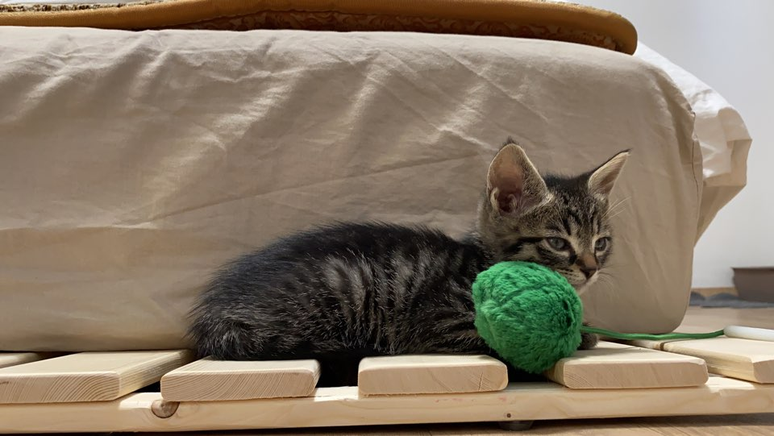

2019년 12월 7일에 아메리칸숏헤어와 러시안블루 사이에서 태어났습니다. 달자는 장난감 가지고 노는것을 좋아합니다. 그리고 엄마의 안약과 아빠의 에어팟을 가지고 노는 것도 좋아합니다. 화장실에 따라들어오는 것도 좋아합니다. 그리고 화장실을 치워주면 용변을 보는 달자입니다. 귀엽죠?

달자는 3번의 예방접종을 했습니다. 아주 건강한 상태고, 마지막으로 무게를 측정했을 때 1.9kg이었습니다. 곧 있으면, 그러니까 약 1달 후에는 중성화 수술을 해야합니다. 아주 큰 일인데 잘 치뤘으면 좋겠습니다. 더운 여름이 오기 전에 할 수 있어서 다행입니다. 달자는 무럭무럭 자라고 있습니다. 모두가 달자의 건강과 행복을 기원해주면 좋을 것 같습니다.
| head | 98.1% |
| body | 97.9% |
| html | 97.9 |